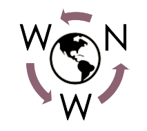

<!-- Toolbar -->
<div class="body">
<nav class="navbar navbar-expand-md navbar-dark text-light bg-dark">
  <!-- Navbar content -->
  <div class="container-fluid">
    <a class="navbar-brand" href="#">

      
      <span class="text-white d-none d-md-inline">
      {{title}}
      </span>
    </a>
      <button class="navbar-toggler" type="button" data-bs-toggle="collapse" data-bs-target="#navbarSupportedContent" aria-controls="navbarSupportedContent" aria-expanded="false" aria-label="Toggle navigation">
        <span class="navbar-toggler-icon"></span>
      </button>
      <div class="collapse navbar-collapse" id="navbarSupportedContent">
    <!--<div class="navbar-nav">-->
      <ul class="navbar-nav mx-auto mb-2 mb-lg-0">
        <li class="nav-item">
        <a class="nav-link active" [routerLink]="['/home']">Home</a></li>
        <li class="nav-item">
        <a class="nav-link active" [routerLink]="['/author-of-the-week']">Author of the week</a></li>
        <li class="nav-item">
        <a class="nav-link active" [routerLink]="['/join-us']">Join us</a></li>
        <li class="nav-item">
        <a class="nav-link active" (click)="changeTheme()">Change Theme</a></li>
      </ul>

      
    
    
    <div class="d-flex">        
      <a href="https://www.facebook.com/Worldwide-writing-network-100554325684717/?ref=pages_you_manage" target="_blank" ngbTooltip="Join us on Facebook" >
        <fa-icon [icon]="faFacebookF" size="2x" [styles]="{'stroke': 'red', 'color': 'white'}" [fixedWidth]="true"></fa-icon>
      </a>
      <a href="https://medium.com/worldwide-writing-network" target="_blank" ngbTooltip="Follow us on Medium">
        <fa-icon [icon]="faMedium" size="2x" [styles]="{'stroke': 'red', 'color': 'white'}" [fixedWidth]="true"></fa-icon>    
      </a> 
      <a href="https://www.linkedin.com/company/worldwide-writing-network" target="_blank" ngbTooltip="Follow us on LinkedIn">
        <fa-icon [icon]="faLinkedin" size="2x" [styles]="{'stroke': 'red', 'color': 'white'}" [fixedWidth]="true"></fa-icon>    
      </a> 

    </div>
  </div>
  </div>
</nav>

<div class="container">
  <router-outlet></router-outlet>
</div>

<!--<div class="container" style="height:80vh">  
  <app-author [faMedium]="faMedium" [faFacebook]="faFacebookF" [faTwitter]="faTwitter" [faYoutube]="faYoutube" [faLinkedin]="faLinkedin" [faInstagram]="faInstagram" [faShareAlt]="faShareAlt" [faFileExport]="faFileExport"></app-author>
</div>
-->

</div>